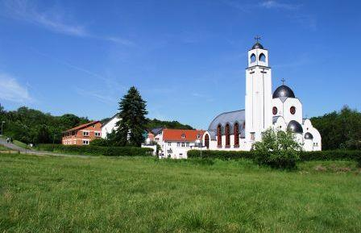
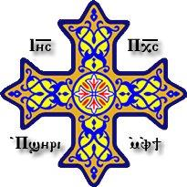

23 5. Anba Isithoros, Bischof und Abt des Baramos-Klosters 6. Anba Athanasius, Bischof von Frankreich 7. Anba Antony, Bischof von Irland, Schottland und Nordost-England 8. Anba Damian, Bischof von Norddeutschland und Abt des Klosters der Heiligen Jungfrau und des Heiligen Mauritius in Brenkhausen/Höxter 9. Anba Gabriel, Bischof von Österreich 10. Anba Dawoud, Bischof von El-Mansoura 11. Anba Apakir, Bischof der skandinavischen Länder 12. Anba Arsany, Bischof der Niederlande 13. Anba Pavlos, Bischof von Griechenland Neuer Pilgerweg führt über das koptische St. Antonius Kloster Im August 2012 eröffnete Dechant Buß aus Freigericht bei Hanau mit einer feierlichen Aussendungsmesse einen 210 km langen neuen Weg, auf dem fromme Pilger zu Fuß in 9 Tagen von der Rhön bis zum Rhein pilgern können. Er schließt das Bonifatiusgrab in Fulda ebenso mit ein wie das im Jahre 1980 eröffnete koptisch-orthodoxe Kloster in Waldsolms-Kröffelbach und die Gedenkstätte der Euthanasie-Opfer der Nationalsozialisten in Hadamar. Das Ziel der Pilgerreise ist ein Muttergottes-Gnadenbild in einer kleinen Kapelle bei Schönstatt unweit des Ortes Vallendar. Der Ausgangspunkt des
St. Markus · 2013 · Deutsch
Neuer Pilgerweg führt über das koptische St. Antonius Kloster
Ausgabe 2 · Seite 23

